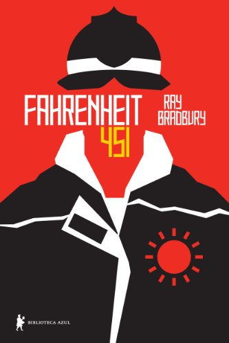
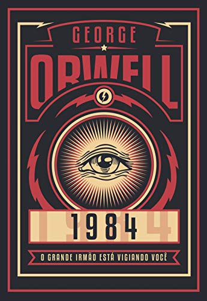

DISTOPIA
AVENTURA
SCI-FI
FANTASIA
TERROR
Best Sellers
Harry Potter e a Pedra Filosofal
J. K. Rowling
Harry Potter é um garoto órfão que vive infeliz com seus tios, os Dursleys. Ele recebe uma carta contendo um convite para ingressar em Hogwarts, uma famosa escola especializada em formar jovens bruxos...
Duna
Frank Herbert
Uma estonteante mistura de aventura e misticismo, ecologia e política, este romance ganhador dos prêmios Hugo e Nebula deu início a uma das mais épicas histórias de toda a ficção científica...
A Passagem
Justin Cronin
Quase um século depois que uma pesquisa cientifica financiada pelo Exército dos Estados Unidos foge do controle, tudo o que resta é uma paisagem apocalíptica. As cobaias utilizadas nos experimentos...
Origem
Dan Brown
Robert Langdon, o famoso professor de Simbologia de Harvard, chega ao Museu Guggenheim de Bilbao para assistir a uma apresentação do futurólogo e bilionário Edmond Kirsch...
Precisamos Falar Sobre O Kevin
Lionel Shriver
Aos 15 anos, o personagem Kevin mata 11 pessoas, entre colegas no colégio e familiares. Enquanto ele cumpre pena, a mãe Eva amarga a monstruosidade do filho. Entre culpa e solidão, ela apenas sobrevive...
Distopias
Admirável Mundo Novo
Aldous Huxley
Um clássico moderno, o romance distópico de Aldous Huxley é incontornável para quem procura um dos exemplos mais marcantes da tematização de estados autoritários, ao lado de 1984...
Laranja Mecânica
Anthony Burgess
Alex é o jovem líder de uma gangue de adolescentes cuja diversão é cometer perversidades e atos de violência pelas ruas de uma cidade futurista governada por um Estado repressivo e totalitário...
A Revolução dos Bichos
George Orwell
Escrita em plena Segunda Guerra Mundial e publicada em 1945 depois de ter sido rejeitada por várias editoras, essa pequena narrativa causou desconforto ao satirizar ferozmente a ditadura stalinista...

Fahrenheit 451
Ray Bradbury
Guy Montag é um bombeiro. Sua profissão é atear fogo nos livros. Em um mundo onde as pessoas vivem em função das telas e a literatura está ameaçada de extinção, os livros são objetos proibidos...

1984
George Orwell
Winston, herói de 1984, último romance de George Orwell, vive aprisionado na engrenagem totalitária de uma sociedade completamente dominada pelo Estado, onde tudo é feito coletivamente...
Clássicos

Flores Para Algernon
Daneil Keyes
Com excesso de erros no início do romance, os relatos de Charlie revelam sua condição limitada, consequência de uma grave deficiência intelectual, que ao menos o mantém protegido dentro de um “mundo” particular...

A Menina que Roubava Livros
Markus Zusak
A trajetória de Liesel Meminger é contada por uma narradora mórbida, surpreendentemente simpática. Ao perceber que a pequena ladra de livros lhe escapa, a Morte afeiçoa-se à menina e rastreia suas pegadas de 1939 a 1943...
Na Natureza Selvagem
Jon Krakauner
Narrativa verídica sobre sonhos de juventude que se transformam em pesadelo. O corpo em decomposição de um jovem é encontrado no Alasca. A polícia descobrirá que se trata do filho de uma família rica...
O Código da Vinci
Dan Brown
Um assassinato no Museu do Louvre traz à tona uma sinistra conspiração para revelar um segredo que foi protegido por uma sociedade secreta desde os tempos de Jesus Cristo...
Grande Sertão Veredas
Guimarães Rosa
Publicado originalmente em 1956, Grande sertão: veredas, de João Guimarães Rosa, revolucionou o cânone brasileiro e segue despertando o interesse de renovadas gerações de leitores...